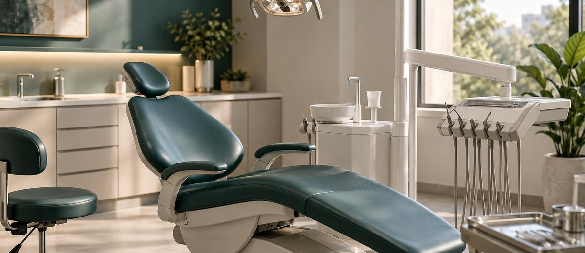

Cuánto te cuesta cada cita cancelada (y por qué no sale en ningún informe)

Una cita cancelada en el último momento no te cuesta solo el tiempo de esa hora. Te cuesta más. Bastante más. Y el problema no es que ocurra, es que nadie lo está midiendo.
En la mayoría de las clínicas dentales, las cancelaciones aparecen en el software como un hueco en la agenda. No en el informe de pérdidas. No en la reunión de gestión. No en ninguna decisión real.
Eso es lo que hay que cambiar primero: entender que un sillón vacío tiene un coste concreto, calculable, y que ignorarlo tiene consecuencias directas sobre el margen de la clínica.
El coste real de una cancelación de última hora
Cuando un paciente cancela con menos de 24 horas de antelación, ya has incurrido en varios gastos que no vas a recuperar:
- El salario prorrateado del doctor que estaba preparado para esa cita. Si trabaja en horario fijo, ese tiempo ya lo pagaste.
- El coste fijo del sillón: alquiler, luz, amortización de equipos. Ese sillón estaba encendido aunque no se usara.
- El hueco perdido: si no tienes lista de espera activa, ese slot no se reocupa. Ese ingreso no existe.
- La cita que no diste: si el slot estaba bloqueado cuando otro paciente llamó, ese paciente buscó otra clínica.
Cuando se suman todos esos conceptos, el coste real de una cancelación sin margen suficiente ronda los 80 a 120 euros por cita. En tratamientos de mayor valor, más.
No es el hueco lo que duele. Es que el gasto ya estaba hecho y el ingreso no va a llegar.
¿Cuántas tienes al mes?
Cuando hacemos este cálculo con los directores de clínica, la reacción suele ser la misma: silencio. Después viene la pregunta.
"¿Y cuántas tenemos al mes?"
La respuesta habitual en una clínica sin protocolo de confirmación está entre 15 y 30 cancelaciones mensuales. Algunas clínicas superan esa cifra con creces.
Haz el cálculo: 20 cancelaciones a 100 euros de media. Son 2.000 euros al mes que no aparecen en ningún informe como pérdida, pero que la clínica está absorbiendo silenciosamente.
24.000 euros al año. Sin que nadie haya tomado ninguna decisión al respecto.
Por qué la mayoría de las clínicas no lo solucionan
No es por falta de ganas. Es porque nunca lo han medido.
Lo que no se mide no duele lo suficiente como para cambiar. Y lo que no duele no genera protocolo.
Así que la agenda sigue con sus huecos, la recepción sigue gestionando las cancelaciones de una en una, y nadie tiene un sistema para que ese daño sea menor.
Lo que funciona no es perseguir al paciente. Lo que funciona es tener tres cosas en su sitio:
- Confirmación sistemática 48 horas antes. No un recordatorio automático solo, sino un protocolo real: mensaje + llamada si no hay respuesta.
- Lista de espera activa. Pacientes que quieren venir antes y están disponibles. Cuando cae una cita, tienes a alguien al que llamar en cinco minutos.
- Política de cancelación comunicada desde el principio. No para multar, sino para que el paciente entienda que ese slot tiene valor y que hay alguien esperando.
No se trata de eliminarlas todas
Las cancelaciones van a existir siempre. Eso es inevitable.
Lo que sí es evitable es no tener ningún sistema para reducirlas, ninguna lista de espera para tapar los huecos y ningún número claro que justifique el esfuerzo de cambiar.
Las clínicas que gestionan bien las cancelaciones no lo hacen porque sean más disciplinadas. Lo hacen porque en algún momento alguien hizo el cálculo, vio el número y decidió que valía la pena tener un protocolo.
Ese momento puede ser hoy.
En Método EBA trabajamos con clínicas dentales para implantar estos sistemas desde el primer mes: confirmaciones, listas de espera, protocolos de recepción. No es teoría. Es lo que reduce el número en la siguiente reunión de gestión.